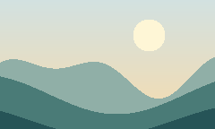

PLECTRON / IN GOOD COMPANY
Pictures in a sentence.
A small picture can have a place in the conversation.
01 / ONE CONTINUOUS THOUGHT
Start with a small sign  and follow the path. An ordinary sentence can carry a view
and follow the path. An ordinary sentence can carry a view

without losing its rhythm. Make the measure narrower and watch the words find their next line.
Click the small sign, or use the controls above.
02 / A DIFFERENT DIRECTION
بداية جميلة مع ضوء الصباح
03 / WORDS KEEP THEIR SHAPE
office affinity / Å / café
There is room for words and pictures.